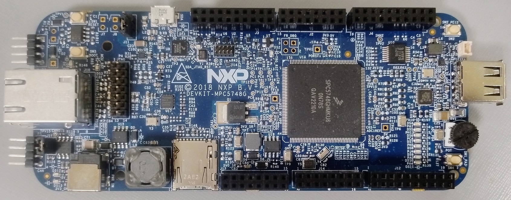
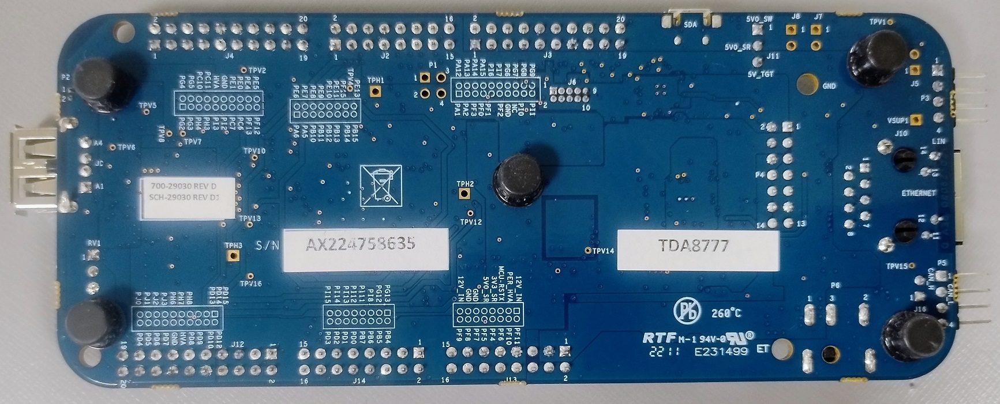
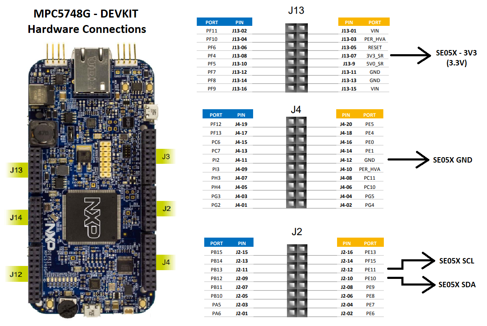
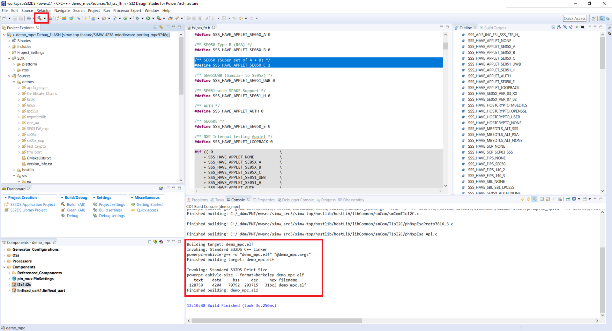
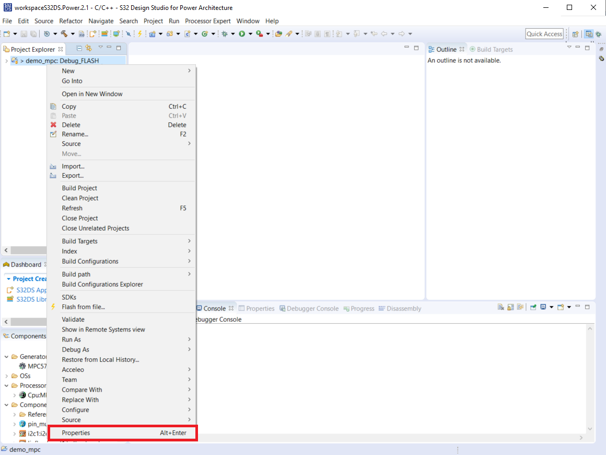
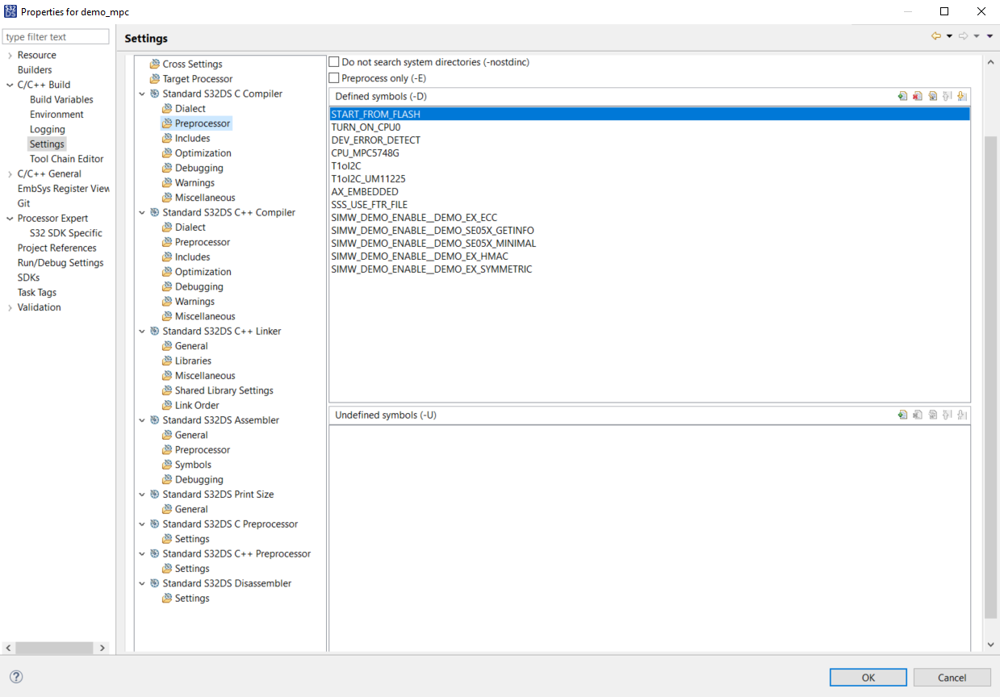
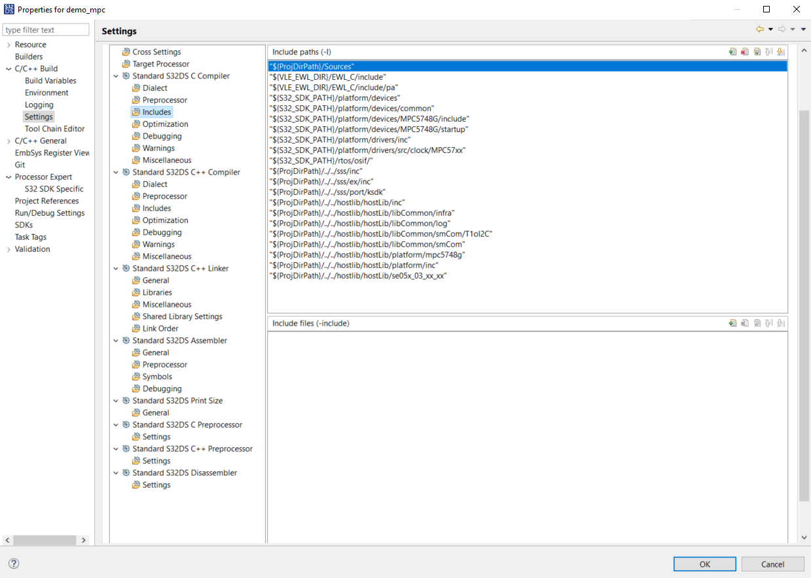

MPC5748G¶
Here we explain the process of using the standalone S32 Design Studio project shipped with this package, which is targeted for the MPC5748G board.
Introduction¶
The MPC5748G microcontroller is a member of a 32-bit microcontroller family built on the Power Architecture® technology.
This family of devices is designed to address a wide variety of automotive applications including but not limited to high end gateway, combined body controller and gateway, central body, vehicle body controllers, smart junction box and front module applications.
 The hardware connections between SE05X and MPC5748G are as follows
S32 Design Studio¶
The S32 Design Studio is a complimentary Integrated Development Environment (IDE) for automotive and ultra-reliable Power Architecture® (e200 core) and Arm®-based microcontrollers and processors.
Follow the following steps to install S32 Design Studio
Ensure that the following requirements are met
Go to the S32 Design Studio IDE page: www.nxp.com/S32DS and go to Downloads. Click S32 DS for Power Architecture
Select the proper IDE, accept the terms and conditions and download S32 Design Studio.
Double click on the installer to start installing the software
When you agree with the Software Terms and Conditions, you get a notification message with the activation code to your email address.
While installing, choose activation type as online and use this Activation Code, to continue the installation.
Once installation is complete, you will see the following message
Note
For more information on S32 desgin studio, check S32 Design Studio for Power Architecture 2.1 (Document Number: S32DSPAIG)
Prerequisite¶
MPC5748G board connected with the Secure Element.
S32 Design Studio is installed. Refer to S32 Design Studio for details on installation. This project has been created and validated on S32 Design Studio 2.1.
SIMW Middleware Package is downloaded and available.
Anatomy of the Project¶
The project contains the .project, .cproject files and the .settings folder. The “source” folder is an empty folder which contains the “links” to source files present in the MW. Following are the resources:
hostlib
sss
demos
All these source links are visible in the project properties as explained in Project Properties.
Building this example¶
Launch the S32 Design Studio IDE and close the welcome screen. When you launch the first time, there won’t be any projects visible in the Project Explorer.Go to File->Open Project from File System:
Click on “Directory”.
Now you will see a window where you can browse in your file explorer to import the project present in MW. Browse to the folder “S32project/demo_mpc”:
When the folder is selected correctly, the project name appears in the “Projects” section and the corresponding checkbox is already checked. You just need to click on the Finish button now.
The project has now been imported in the IDE. Its folder structure appears in the “Project Explorer” as shown. Click on continue loading the load the SDK:
Click on Yes to update SDK:
Click on OK to approve SDK change. Note that the SDk must be S32_SDK_S32PA_RTM_<version>:
The complete project will be visible in the project explorer now.
The default demo enabled is ecc. If you go to Sources->sss->ex, you will see that ecc folder is enabled.
Once the project is present, click on the build button to build the project. If build is successful, you will see demo_mpc.elf file created in th logs:
Running / Debugging example¶
Once the build is successful, you can go ahead with the running steps. Connect the MPC board to the PC and ensure the SE05X is connected as shown in Introduction .Now to flash the binary, select the Debug tool from the toolbar and select the launch configuration.
If the MPC5748G board is already connected to your PC, S32 Design Studio will automatically detect it and control will go to the start of the program. You can click on Play/Resume button to start the execution.
Once you stop the debugger, the session will be terminated
Open Tera Term, and connect to serial port.

If the demo is successful, you should see the logs as shown.
Building other example¶
In order to build another demo, we need to first disable the ecc demo and enable the demo we need to build.
Right click on ecc folder, Resource Configuration->Exclude from Build
Click on Select all and ensure both boxes are selected. Then click OK. This disables the folder from the build.
You will now see that the ecc folder has been disabled.
Right click on md folder, Resource Configuration->Exclude from Build. This is the message digest demo. Click on Deselect all and ensure both boxes are unselected. Then click OK. This enables the folder from the build.
You will now see that the md folder has been enabled.

You can follow the steps in Building this example, to build the demo and Running / Debugging example to run it.
Project Properties¶
Here we examine the important settings/properties of the projects that would be useful for development. To view the properties, right click on the project click on Properties.
Preprocessor macros to configure the build are visible in Settings->Preprocessor.
Include paths to build the examples are visible in Settings->Includes.
Configuring the macros¶
This MW has several configurable macros, which can be usually modified through a GUI in case of CMake build. However, in this MCUXpresso project, we need to edit them in the preprocessors section as shown in Project Properties.
Some of the macros are as follows:
CPU_MPC5748G enable MPC5748G controller files
T1oI2C and T1oI2C_UM11225 enable T1oI2C files for I2C commmunication
SSS_USE_FTR_FILE use feature file present in demo_mpc project folder
NX_LOG_ENABLE_SSS_DEBUG enable debug logs
SIMW_DEMO_ENABLE__DEMO_EX_ECC enable ecc demo
SIMW_DEMO_ENABLE__DEMO_EX_HMAC enable hmac demo
SIMW_DEMO_ENABLE__DEMO_EX_SYMMETRIC enable symmetric demo